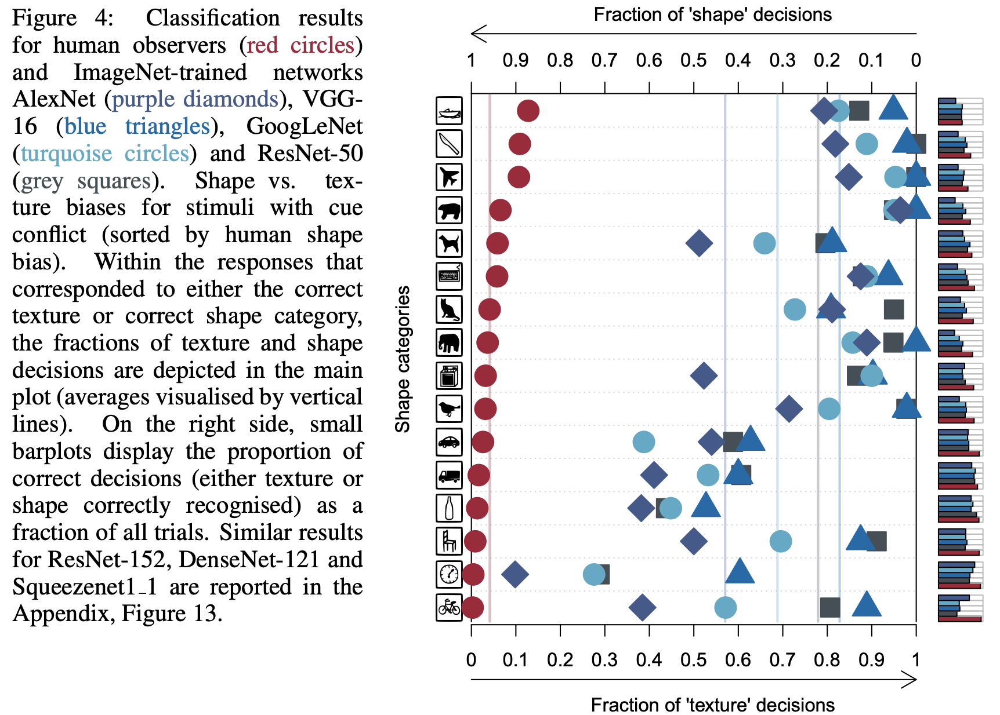

Table of Contents
이번 포스팅은 논문 ImageNet - Train CNNs are biased towards texture; increasing shape bias improves accuracy and robustness을 읽고 읽은 내용을 포스팅한다.
무엇이 맞는 말일까??
컨볼루션 뉴럴 네트워크(Convolutional Neural Network)가 무엇에 편향되는지 바라보는 두 가지 관점
형상 정보 가설과 질감 정보 가설(Shape Hypothesis vs Texture Hypothesis)
형상정보 가설(Shape Hypothesis)
많은 사람들은 컨볼루션 뉴럴 네트워크(Convolutional Neural Network; 이하 CNN)가 “레이어가 깊어질 수록 저-레벨(low level)의 특징(feature)을 조합해서 고-레벨(high level) 특징(feature)을 만들고, 이 특징들을 이용하여 객체인식을 한다.” 이라는 직관에 동의할 것이다.
[그림 1] ZF-Net으로 시각화한 layer들의 특징
CNN이 객체 분류를 어떻게 하는지에 대한 공통된 해석은 여러 문헌에서도 나타나는데 Kriegeskorte과 LeCun은 그들이 저술한 논문 혹은 아티클에서 아래와 같이 언급했다.
CNN은 각 카테고리(강아지, 고양이)가 가지고있는 고유한 패턴과 같은 지식을 얻는다. … (중략) … 고-레벨(high level)의 특징들은 실제 영상(생성되거나 조작되지 않은 영상)에서 나타나는 형상(shape; 이하 형상) 정보를 배우는 것 처럼 보인다.
CNN의 중간 레이어들은 같은 카테고리의 객체들에게서 유사한 부분을 인식한다. …(중략) … 객체를 검출하는 것은 이러한 부분들의 조합이다.
이렇게 CNN이 형상 정보를 학습한다는 주장을 형상 정보 가설 (Shape Hypothesis)부른다.
형상 가설은 수많은 실험을 통해서 지지를 받는데, 대표적으로 ZF-Net이 있다. ZF-Net은 모델의 레이어로부터 특징들을 추출한다. 그 후 역-컨볼루션(De-Convolution)이라는 연산을 통해서 추출한 특징을 시각화한다. [그림 1]은 ZF-Net에서 추출한 특징을 시각적으로 보여준다.
Kubilius라는 연구자는 CNN을 사람의 시각 인지 모델로써 제안했으며 Ritter는 CNN이 아이들과 유사하게 형상 정보를 개발해나간다는 것을 밝혀냈다. Ritter가 이야기하는 형상 정보를 개발한다는 것의 의미는 색감(Colour) 정보 보다는 형상 정보가 객체 분류를 하는데 더 중요한 역할을 한다는 것을 의미한다.
실제로 형상 정보 가설은 사람의 인지 체계와 매우 비슷하기도 하다. 사람은 모양이 바뀌면 다른 카테고리로 분류하지만 질감 및 크기가 변화하더라도 같은 모양이면 같은 객체 카테고리로 인식한다. 이는 해당 연구 결과를 통해서 확인되었다.
[그림 2] 사람은 질감과는 관계없이 모양에 따라 같은/다른 물체로 인식한다.
Summary
- 형상정보 가설(Shape Hypothesis)는 CNN이 객체의 거시적인 형상을 보고 인식을 한다는 가설이다.
가설을 지지하는 실험들이 여러 논문들을 통해서 확인되었다.
ZF-Net, A Shape Bias Case Study,
이러한 형상정보 가설은 사람의 인지체계와도 제일 유사한 측면을 갖는다.
질감 정보 가설(Texture Hypothesis)
몇몇 연구 결과들은 형상 정보 가설과 상반되는 결과를 얻기도 했다. 대표적으로 연결이 부분적으로 끊어진 네트워크에서 학습된 모델은 질감 정보(Texture; 이하 질감)가 더 중요한 역할을 한다는 연구가 있다. 해당 연구에서는 CNN이 전반적인 형상 정보가 없어도 질감 정보를 이용해서 영상을 잘 분류할 수 있다는 것을 증명한다. 오히려 질감 정보가 없는 형상 정보(스케치 그림)만으로 학습한 CNN은 나쁜 인식 성능을 갖는다.
[그림 3] CNN의 질감 정보만을 이용한 분류 예시
[그림 4] 질감 정보가 없는 스케치 데이터로만 학습했을 때, 새(bird) 데이터를 얼마나 많이, 자주 틀리는지에 대한 예시
두 가지 결과는 질감 정보와 같은 지역적인 정보(Local feature)만을 이용해서 객체 인식 문제를 충분히 해결할 수 있다는 것을 시사한다. 이를 증명한 연구결과는 여기에서 확인할 수 있다.
질감 정보의 중요성을 이야기하는 또 다른 연구에서는 질감 정보를 학습하고 특정 질감 정보를 생성하는 네트워크를 만들었다. 이렇게 질감 정보를 종류별로 학습하고 생성한다는 것은 모델이 세 가지의 기능을 수행한다는 의미를 갖는다.
- 종류별 질감 정보를 분류한다.
- 종류별 질감 정보의 분포를 학습한다.
- 특정 질감 정보의 분포를 생성 한다.
해당 네트워크는 분류(Classification)를 하는 네트워크가 아니다. 하지만 질감 정보를 종류별로 생성한다는 것은 “질감 정보의 분포가 서로 다르기 때문에 질감 별로 분리해서 학습할 수 있다”는 것을 내포한다. 이런 맥락에서 논문의 저자는 질감 정보만으로 객체 분류 문제를 풀 수 있다고 이야기하는 듯 하다.
[그림 5] 질감정보를 생성하는 네트워크
그 외에도 다른 연구에서는 최대 리셉티브 필드의 크기에 제한을 둔 BagNet을 설계했다. BagNet은 최대 리셉티브 필드 크기의 제한으로 CNN이 국부적인 정보만 볼수 있게끔 시야가 제한이 되었다. 그럼에도 불구하고 ImageNet 데이터에서 놀라울 정도로 높은 정확도를 갖는 결과를 얻었다. 이러한 결과들을 보았을 때 국부적인 질감 정보는 객체 분류를 하는데 충분한 정보를 가지고 있음을 알 수 있다. CNN은 이런 질감 정보을 추론하는데 이를 질감 정보 가설(Texture Hypothesis)라고 부른다.
[그림 6] 최대 리셉티브 필드의 크기가 제한된 Bag Net의 최종 Layer에서 확인된 Feature들
Summary
- 질감정보 가설(Texture Hypothesis)는 CNN이 객체의 국부적인 질감정보를 보고 인식을 한다는 가설이다.
- 가설을 지지하는 실험들이 여러 논문을 통해서 확인되었다.
지금까지 형상 정보 가설(Shape Hypothesis)와 질감 정보 가설(Texture Hypothesis)를 살펴보았다. 이렇게 상반되는 두 가지 가설을 해결하는 것은 인공지능 커뮤니티와 뇌 과학자 커뮤니티 모두에게 중요하다.
해당 논문에서는 StyleGAN을 이용하여 질감-형상 정보가 모순된 이미지(Cue Conflict)를 만들었다. 이를 이용하면 CNN과 사람의 시각 능력에 대해서 정량적으로 측정할 수 있게 된다. 이렇게 만든 질감-형상 정보가 모순된 이미지(Cue Conflict)를 이용해서 총 97명의 실험 참가자와 함께 9종류의 정신 물리학 실험(Psychophysical Experiments) 을 진행하였다. 총 실험의 횟수는 48,560번이었다.
본 논문의 기여는 아래와 같다.
- CNN과 사람의 인지 차이를 확인함
- CNN의 편향의 변경할 수 있음을 확인함
- 편향의 변경으로 생기는 효과를 확인함
실험
CNN과 사람의 시각 시스템의 차이를 확실하게 확인하기 위해서 해당 논문에서는 여러가지 실험을 진행했다.
- CNN과 사람의 시각 시스템은 서로 어떻게 다를까?(Psychophysical Experiments)
- 데이터셋
- 모순된 영상을 보여준다면? (Cue Conflict)
- 실험 결과
- CNN이 사람과 비슷하게 보게 하려면? 비슷하게 보게 된다면?
CNN과 사람의 시각 시스템은 서로 어떻게 다를까? (Psychophysical Experiments)
CNN과 사람이 어떻게 물체를 인식하느냐(질감 정보를 기반으로 인식하느냐? vs 형상 정보를 기반으로 인식하느냐?)를 확인하기 위해서 정신 물리학(Psychophysical Experiments; 이하 정신 물리학) 실험을 진행하였다.
실험 내용은 16-Class-ImageNet이라는 데이터 셋을 사람과 CNN에게 똑같이 보여주고 이미지 분류 작업 결과를 확인하였다. 실험 참가자는 총 97명이었으며 16-Class-ImageNet의 데이터수는 49K(49,000)였다.
사람과 CNN이 본질적으로 큰 차이가 있기 때문에 실험은 굉장히 신중하게 설계 되었어야 했다. CNN은 단일의 영상 정보를 한번만 네트워크에 입력하지만 사람의 시각 시스템은 연속된 정보(동영상)을 획득하고 뇌에서는 이를 기반으로 각 신경끼리 피드백을 주고받는다. 따라서 단순하게 영상을 보여주고 분류하는 실험은 CNN과 사람에게 단 한장의 영상만 보고 분류를 한다라는 실험 조건에서 단 한장이 서로 다를 수 있다.
실험을 최대한 공평하게 진행하기 위해서는 사람과 CNN의 실험 조건을 같게 설정 해야했다. 사람의 시각 시스템에서 발생하는 피드백은 영상을 제공하는 순서와 타이밍을 조절하여 최소화하였다. 이러한 방법은 이미 정신 물리학적 실험에서는 잘 알려진 사실이라고 논문에서는 언급한다. 하지만 의학적인 참고자료가 제시되어있지 않아서 더 자세한 근거는 확인하지 못했다.
- 200ms 동안 분류작업을 할 영상을 보여준다.
- 300ms 동안 고정된 사각형 이미지를 보여준다.
- 1/f 스펙트럼을 가진 노이즈 마스크를 200ms동안 보여준다.

[그림 7] CNN과 사람의 시각 시스템의 비교
데이터 셋
해당 연구의 실험에서는 사람과 CNN이 서로 어떤 가설을 기반으로 인지를 하는지 확인하는 것이 목적이므로 16-Class ImageNet 데이터를 왜곡하여서 진행하였다.
- Original
- GreyScale
- Silhouette
- Edges
- Texture
- Cue Conflict (모순된 영상)
[그림 8] 16-Class ImageNet 예시
모순된 영상(Cue Conflict)
기본적인 이미지 왜곡 외에도 서로 다른 형상 정보와 질감 정보가 섞여 있어 모순을 일으키는 Cue Conflict 영상으로도 실험을 진행하였다.
[그림 9] Silhouettes를 이용한 Cue Conflict 영상(위에서 3번째)과 Style transfer를 이용한 Cue Conflict 영상(위에서 네 번째)
Cue Conflict 영상을 만들기 위해서 두 가지 방법을 적용하였다.
- 세그멘테이션 맵을 이용해 다른 영상 정보를 혼합하는 방법(filled silhouettes)
- Style GAN을 이용하여 영상 정보를 혼합하는 방법(style transfer)
연구자들이 막상 이러한 영상을 만들고 나니까 문득 든 생각이 해당 영상들이 실제 형상 정보와 질감 정보가 완전히 모순 되어 있다는 것을 어떻게 증명할 수 있을까? 였다. 이를 증명하기 위해서 연구자들은 앞서 언급했던 Bag Net를 사용하였다.
Bag Net는 최대 리셉티브 필드의 크기를 제한하여 CNN이 이미지의 전체 형상을 보지 못하게 만든 모델이다. 국부적인 특징(local feature)들만 이용했음에도 불구하고 BagNet은 굉장히 좋은 성능을 나타내었는데 만약 국부적인 특징(Texture)이 전체적인 특징(Shape)과 모순되어있다면(Cue conflict) Bag Net의 성능이 급격히 하락할 것이다.
실제로 Bag Net을 이용하여 Cue conflict 영상을 추론해본 결과 기존 ImageNet 데이터에서 성능이 잘 나오던 모델이 약 85% 정도의 성능 하락 발생한 것을 할 수 있었다.(ImageNet, 70.0% top-5 accuracy → Cue conflict, 10.0% top-5 accuracy)
이를 토대로 생성된 Cue conflict 영상이 형상 정보와 질감 정보가 모순되어 있다는 것을 확인할 수 있었다.
실험 결과
실험 결과 사람과 CNN이 물체를 분류하는 작업에서 큰 차이를 볼 수 있었다. 사람은 굉장히 형상 정보에 편향되어 있고, CNN은 질감 정보에 편향되어 있음을 확인할 수 있었다.
이는 고양이 형상에 코끼리 가죽 질감 정보가 섞여있는 Cue conflict 영상을 사람과 CNN에게 보여주었을 때, CNN은 이를 “코끼리”로 사람은 이를 “고양이”로 인식한다는 이야기가 된다.

[그림 10] CNN과 사람의 시각 시스템의 차이. 왼쪽은 형상 정보 편향을 의미하고 오른쪽으로 질감 정보 편향을 의미한다. 해당 그림에서 사람은 형상 정보에 편향 되어있음을 CNN은 질감 정보에 편향 되어있음을 확인할 수 있다.
CNN이 사람과 비슷하게 보게 하려면? 비슷하게 보게 된다면?
연구자들은 이제 CNN이 사람과 비슷하게 형상 정보에 편향되면 어떻게 될까?가 궁금해졌다. 그래서 기존의 IN(ImageNet) 데이터와 SIN(Sytle transfered ImageNet)데이터를 이용하여 학습을 진행하였다.
학습 방법에 대해서는 다양한 실험을 진행했다
- IN 학습 → IN으로 평가
- IN 학습 → SIN으로 평가
- SIN 학습 → IN으로 평가
- SIN 학습 → SIN으로 평가
- IN과 SIN을 혼합해서 학습 → IN으로 평가
- IN과 SIN을 혼합하여 학습 후 IN으로 파인튠 → IN으로 평가
학습 후에는 모델이 효과적으로 형상 정보 편향이 되었는지 확인하기 위해 16-Class-ImageNet 데이터를 이용하여 이를 확인하였다. 전부는 아니지만 많은 클래스에 대해서 CNN이 질감 정보 편향에서 형상 정보 편향으로 이동 하였음을 확인할 수 있었다.
[그림 11] IN/SIN 데이터를 학습한 모델과 사람의 차이. 데이터를 혼합해서 학습한 모델이 그림 10. 과 비교했을 때 상대적으로 형상 정보 편향으로 이동되었음을 확인할 수 있다.
결론적으로 해당 실험에서 SIN 데이터(형상 정보 편향)만으로는 성능을 더 개선시킬 수는 없었다. 하지만 IN 데이터와 SIN데이터를 혼합해서 학습하는 경우에는 ImageNet 데이터 셋만 이용해서 학습한 것보다는 성능이 더 좋아진다는 것을 확인하였다. 또한 형상 정보 편향이 된 CNN을 이용해 객체 검출(Object Detection) 모델에 전이 학습(Transfer learning)했을 때, 기존의 객체 검출 모델보다 성능이 더 개선 되었음을 확인할 수 있었다. 이는 SIN데이터를 혼합해서 학습하는 것이 모델의 일반화(Generalization)에 더 기여한다고 해석할 수 있다.
[그림 12] IN데이터와 SIN 데이터를 이용한 CNN 학습 결과
그 외에 노이즈를 이용한 영상 왜곡 실험을 추가로 진행했다. 이 경우에도 형상 정보에 편향된 CNN이 노이즈 왜곡에도 모델이 더 강인해짐을 확인할 수 있었다.
[그림 13] 추가 영상 왜곡 실험에서 사용한 노이즈 예시
[그림 14] 형상 정보, 질감 정보에 편향된 CNN이 노이즈 왜곡에 따라 나타내는 성능
요약
기존의 CNN이 이미지 분류를 할 때, 형상 정보를 기반으로 인식을 한다는 형상 정보 가설(Shape Bias Hypothesis)와 질감 정보를 기반으로 인식한다는 질감 정보 가설(Texture Bias Hypothesis)가 존재했다.
사람과 CNN이 영상 데이터를 어떤 관점에서 분류하는지 확인하기 위해 정신 물리학 실험을 수행했다. 해당 실험을 통해서 사람은 형상 정보에 편향 되어있고, CNN은 질감 정보에 편향 되어 있음을 확인할 수 있었다.
모델을 SIN/IN 데이터를 혼합하여 학습하면 모델을 형상 정보로 편향시킬 수 있다. 형상 정보로 편향된 모델이 기존 IN 데이터로만 학습된 모델보다 더 좋은 성능을 나타냄과 동시에 전이 학습(Transfer learning)에서도 성능 개선이 유효함을 확인할 수 있었다. 따라서 본 논문에서 제안한 SIN/IN 데이터 학습이 인공지능 모델을 일반화(Generalization) 시키는데 기여한다라고 이야기할 수 있다.
참고자료
Thanks to